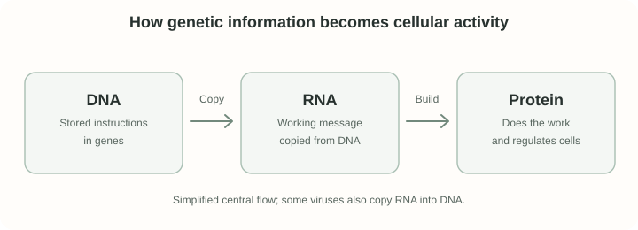

A new stage in Mukherjee's career: Spring 2005
The chapter opens in spring 2005, near the end of Siddhartha Mukherjee's oncology fellowship. Seven young doctors who have shared an exhausting two years now have to choose their paths. Three will remain primarily in clinical medicine, caring for patients and designing clinical studies. Four will devote more of their lives to experiments in laboratories. Mukherjee knows that he is drawn toward the laboratory, yet his decision is not a retreat from patients. He wants to understand the disease that has shaped their lives.
He chooses leukemia as his subject. That choice connects the present with the earliest chapters: Sidney Farber also chose leukemia because studying it might illuminate the biology of cancer. For Mukherjee, the reason is more personal. Carla Reed, whose diagnosis began the book, has left a lasting impression. The central question becomes: What happens inside a cell that turns normal growth into cancerous growth?
The doctors remember people, not just diagnoses
Before leaving the wards, the fellows prepare lists of patients for the incoming trainees. One doctor, Lauren, begins reading the names of patients who have died and adding a brief personal remembrance to each. Others join in. Mukherjee remembers Kenneth Armor, an internist with stomach cancer who wanted time with his wife and his cats, and Oscar Fisher, a young man with small-cell lung cancer whose mother stayed close to him at the end.
The gathering becomes an informal memorial. It forces the doctors to confront how deeply their work has changed them. Someone once confident has become humble; someone previously cheerful has learned grief; another doctor who expected to become a laboratory scientist now feels pulled toward patient care. This is a crucial emotional introduction to a chapter about genetics. The scientific questions are inseparable from the human beings whose suffering creates the urgency to answer them.
Carla Reed: The earlier story has not ended
A little more than a year after diagnosis, Mukherjee finds Carla chatting comfortably with nurses during a follow-up visit. Her appearance is transformed. Her color has returned, her family routines are recovering, and the visible reminders of her earlier illness are fading. She continues taking 6-mercaptopurine and methotrexate, medicines designed to suppress any residual leukemia cells.
Her daughter sometimes wakes from nightmares, but Carla insists they are ordinary childhood fears rather than a direct consequence of the illness. When the new blood results arrive, they are normal. Carla remains in remission. Mukherjee is delighted, but he communicates the results carefully. Patients who have endured serious illness may distrust exaggerated celebrations. Good news should be explained without pretending that uncertainty has disappeared.
This return to Carla is important: the author's transition to molecular biology is not motivated by curiosity alone. It arises from caring for an actual person who might relapse if even a few malignant cells escape treatment.
A laboratory trying to separate cancer cells from normal cells
In the laboratory, Mukherjee works with two matched plates containing hundreds of tiny wells. In one plate, he places leukemia cells. In the other, normal blood-forming stem cells. Different candidate chemicals are added to corresponding wells. Automated microscopes and computer analysis track what happens to the cells.
The desired result is beautifully simple but extraordinarily difficult: find a chemical that kills leukemia cells while sparing healthy stem cells. A compound that destroys both groups indiscriminately may be too toxic to be useful; one that leaves cancer cells alive cannot treat the disease effectively.
Under his microscope, the leukemia cells appear abnormal, with swollen nuclei and distorted proportions. The cell line has been growing in laboratories for decades, even though the person from whom it was originally obtained died many years earlier. Cancer cells can sometimes continue replicating indefinitely under laboratory conditions. Mukherjee presents this strange survival as a clue to cancer's extraordinary capacity for growth.
Virchow saw what cancer did, but not why
The historical investigation begins with Rudolf Virchow in the nineteenth century. Virchow recognized that cancer consisted of excessive cellular proliferation: cells were dividing in an uncontrolled way. This replaced older explanations involving mysterious body fluids or invisible imbalances.
Yet Virchow suggested that inflammation surrounding cells was the principal cause. That idea contained a fragment of truth: chronic inflammation can contribute to cancer risk. The deeper problem, however, was internal. Cancer cells can acquire genetic changes that drive them to divide even when ordinary external signals are absent.
Think of a workplace in which employees work harder whenever a supervisor gives an instruction. Virchow was studying why the supervisor might keep sending orders. The later genetic explanation asks whether the machine's own control system has malfunctioned so that it keeps running without orders.
Flemming discovers the strange bodies inside dividing cells
In 1879, Walther Flemming studied dividing salamander cells using chemical stains. He could see dark, threadlike structures inside their nuclei. These structures, called chromosomes, duplicated and were distributed to daughter cells during division.
Chromosomes offered a physical explanation for how cellular contents could pass from one generation of cells to another. They appeared in regular numbers and followed an orderly pattern when cells divided normally. But at the time, nobody knew precisely what information they contained.
For cancer researchers, a new question emerged: if chromosome distribution is necessary for healthy division, could disturbed chromosome distribution be connected to malignant growth?

Von Hansemann sees abnormal chromosomes in tumors
A former Virchow assistant, David Paul von Hansemann, examined cancer cells with similar stains. The chromosomes in tumors were often strange: broken, joined incorrectly, distributed unevenly, or present in abnormal numbers.
This mattered because it shifted attention from the tissues around cancer cells to the interior of the malignant cell. Something inside the cell appeared to differ from normal.
But the observation raised an essential scientific problem: correlation is not causation. Did abnormal chromosomes make cells cancerous? Or did cancerous growth itself damage chromosome organization? A photograph of an abnormal cell could not answer that question. A convincing theory required experiments that could establish a causal relationship.
Theodor Boveri experiments with sea-urchin eggs
Theodor Boveri, another former associate of Virchow, studied the development of sea-urchin embryos. Normally, one sperm fertilizes one egg and chromosomes are distributed in an orderly manner as the embryo divides.
Boveri deliberately altered this process by allowing more than one sperm to fertilize an egg. The result was chromosomal disorder. Cells that failed to receive a workable combination of chromosomes often could not develop normally.
The experiment suggested that chromosomes carry information essential for the regulation and development of living cells. Boveri made a bold theoretical leap: perhaps the irregular chromosomes seen in tumors were not just a consequence of cancer but part of its cause.
In 1914, he published his theory of malignant tumors and proposed that there might be a common underlying cause across many cancers. He could not identify specific cancer genes, but he placed the explanation inside cellular chromosomes.
Why Boveri's theory faced a major objection
Another discovery appeared to contradict him. Peyton Rous had shown that a particular virus could cause tumors in chickens. At first, these explanations seemed mutually exclusive. Boveri's cause was internal—a cellular chromosome. Rous's cause was external—an infectious virus.
If an outside pathogen caused cancer, perhaps the problem could be attacked as other infections were attacked. Doctors could imagine finding the microbe and even developing a protective vaccine. An obscure abnormality deep within the cell offered a much less obvious route to a cure.
The competing theories—viruses from outside versus genetic disturbances from inside—would dominate cancer research for decades. Later chapters show why the two ideas were not actually incompatible.
Mendel invents a language for heredity
Meanwhile, ordinary biology was progressing independently of cancer research. Gregor Mendel, working with pea plants in the nineteenth century, found that traits such as height or seed appearance were inherited in distinct patterns. Traits were not simply blended together like colored liquids.
Mendel concluded that organisms pass on discrete units of hereditary information. He could not see the units themselves, and the word gene came later, but he had discovered an essential rule.
This was a new way to think about living things: an organism carries instructions that can be transmitted to offspring. The next question was where those instructions physically resided.
Morgan connects genes to chromosomes
At Columbia University, Thomas Hunt Morgan bred enormous numbers of fruit flies. He noticed that certain eye-color traits were connected with sex. Because sex determination was linked with chromosomes, he realized that hereditary information must be carried on those structures.
By 1915, Morgan had advanced the idea that genes lie on chromosomes. The physical structures seen by Flemming and the abstract hereditary units inferred by Mendel finally met.
This was fundamental for cancer biology. A chromosomal defect could now imply something more specific: a disruption in hereditary instructions that regulate cellular behavior.

Avery identifies the chemical carrying genetic information
There was still another mystery. What were genes made of? Proteins were chemically complicated and appeared attractive candidates; DNA seemed almost too simple.
Oswald Avery and colleagues studied bacteria and the transfer of hereditary traits between them. Their experiments demonstrated in 1944 that DNA was responsible for this transfer. The chemical once considered an unimportant component of cells turned out to carry genetic information.
The chain of understanding was taking shape: traits are transmitted through genes; genes are carried on chromosomes; and DNA is the chemical basis of genes. This knowledge was essential for describing mutations not merely as vague abnormalities but as physical alterations in information.

Genes act through RNA and proteins
The next question was how DNA instructions influence the behavior of a cell. Work by George Beadle and Edward Tatum connected genes with the production of proteins. Proteins perform many tasks: catalyzing reactions, carrying signals, building structures, and controlling the cell cycle.
Later molecular biologists established the familiar flow of information DNA → RNA → protein. DNA stores the instruction, RNA acts as a working copy, and the resulting protein carries out the function. This is a simplified account of what became known as the central dogma.
| Component | Easy meaning | Role in the cell |
|---|---|---|
| DNA | Stored blueprint | Carries genetic instructions |
| Gene | A particular instruction | Encodes information for a functional product |
| RNA | Working message | Helps express genetic information |
| Protein | Functional machinery | Performs or regulates cellular activities |
If a gene controlling cell division is damaged, its protein product may send the wrong signals. That connection offers a possible route from mutation to cancer.
A Brazilian family offers an early clue about inherited cancer
In 1872, Brazilian ophthalmologist Hilário de Gouvêa treated a boy with retinoblastoma, a rare eye cancer. Years later, some of that man's children developed similar tumors, even though their mother had no reported family history of the illness.
This suggested that a tendency toward particular cancers might be inherited. But families share environments as well as genes, and de Gouvêa lacked the tools to identify the hereditary factor. The report remained an intriguing clue rather than a conclusive explanation.
The story matters because it points toward a possibility later explored in detail: people can inherit a genetic predisposition to cancer without inheriting a fully developed tumor.
X-rays connect mutation to disease—almost
Morgan saw naturally occurring mutations in his fruit flies. His student Hermann Joseph Muller later found that exposing flies to X-rays greatly increased the frequency of inherited mutations. Radiation could therefore alter genetic information.
This discovery nearly completed an important chain of reasoning: radiation can cause cancer, and radiation can cause mutations. Could mutations therefore cause cancer? The connection seems obvious in hindsight, but it was not proved at the time.
Relations between scientists also mattered. Morgan and Muller became bitter rivals. Their disagreements, and the separation between laboratory genetics and medical practice, helped delay the merging of these fields. The chapter shows that scientific discoveries depend not only on facts but also on whether researchers can recognize how separate facts connect.
The chapter's central question and final takeaway
By the middle of the twentieth century, biologists understood a great deal about normal inheritance and normal cell division, yet they had no complete molecular account of human cancer. Evidence pointed toward genes, chromosomes, viruses, radiation, and inheritance, but the pieces did not fit into one convincing picture.
Mukherjee's underlying question is whether there is a unitary cause behind many superficially different cancers. The answer will not be one bacterium or one toxic substance. It will involve alterations to the genetic systems that regulate growth and survival.
Remember this progression: Virchow recognizes abnormal cell growth → Flemming observes chromosomes → von Hansemann finds chromosome irregularities → Boveri proposes a chromosomal cause → Mendel and Morgan explain heredity → Avery identifies DNA → molecular biologists connect genes to proteins. The chapter creates the foundation for discovering how abnormal genes drive cancer.
Deeper meaning: Understanding the structure of normal life is often a prerequisite for understanding disease. And the search begins with patients: Carla's continued remission is what gives Mukherjee's laboratory question its human urgency.